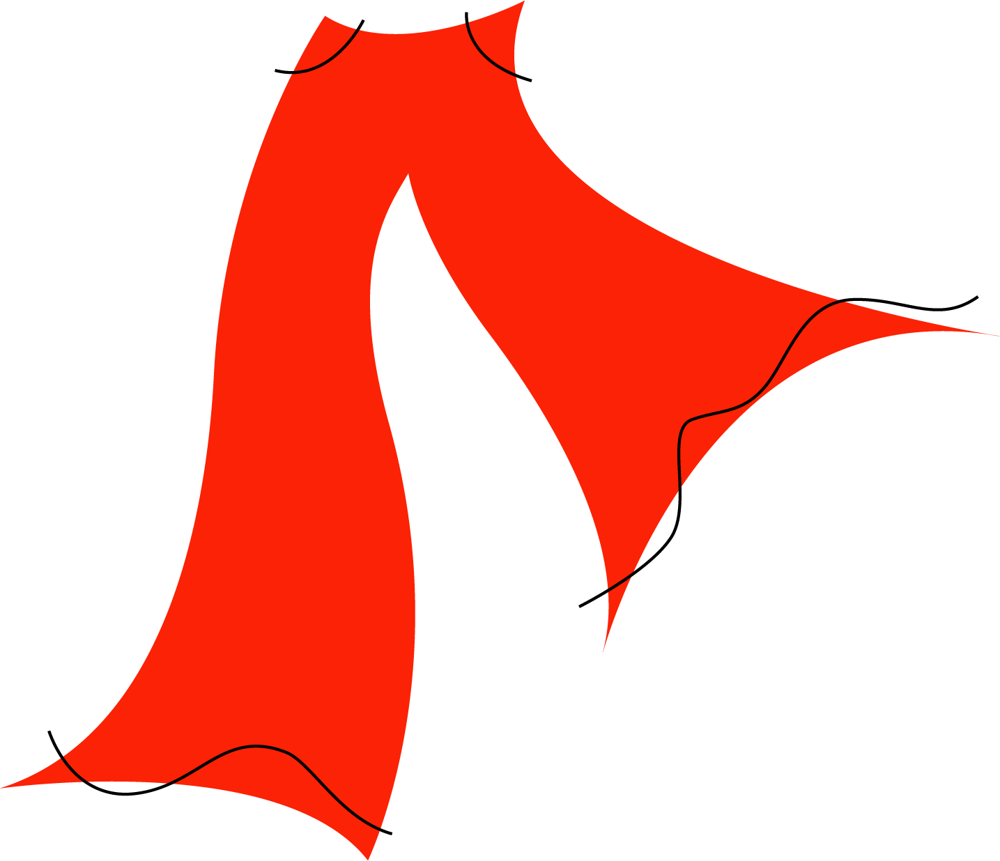

Your favourite jeans fit with perfect form, are extremely comfortable and make you feel confident and sexy in your skin. Through lots of wear they can start to lose their touch and will break down, a natural cycle of life. As well, over time, bodies change, grow, while simultaneously identities shift and taste and judgement alters. In that moment of purchase, you knew it was a wise transaction of money for pleasure, even though we are aware of our constant state of change and growth. This can easily be related and applied to the existence of a web page. When caught in the moment of inspiration and creation you develop a site and release it to be free in the world wide web for your personal satisfaction. As your skills develop and your creativity expands far beyond, you can fathom new and powerful spaces to share. That previous site created can be used as a marking point to highlight your growth and development. Just like when it's time to put those jeans in the back of the closet, you'll be grateful for all the support and killer lewks it was able to provide.
